Verdulivery
Verdulivery es un pequeño emprendimiento dedicado a brindar servicios de entrega a domicilio de productos frescos y artículos de almacén. Necesitaban explorar una forma de distribuir su catálogo de productos de manera efectiva a su comunidad local.
Descripción del proyecto
Verdulivery atiende a una clientela diversa, desde profesionales ocupados hasta personas mayores con necesidades de accesibilidad específicas. Su propuesta de valor única es un modelo de servicio profundamente personalizado. Originalmente, el negocio compartía las listas de productos de forma manual a través de WhatsApp. Sin embargo, a medida que su inventario se expandió más allá de los productos frescos hacia artículos de almacén en general, requirieron una forma más escalable de gestionar y distribuir su catálogo sin perder su característico toque humano.
- Rol: Diseñadora y Desarrolladora Frontend
- Tecnologías: Wordpress, CSS, HTML5
- Duración: 1 mes
- Año: 2022
Pantallas para Móvil
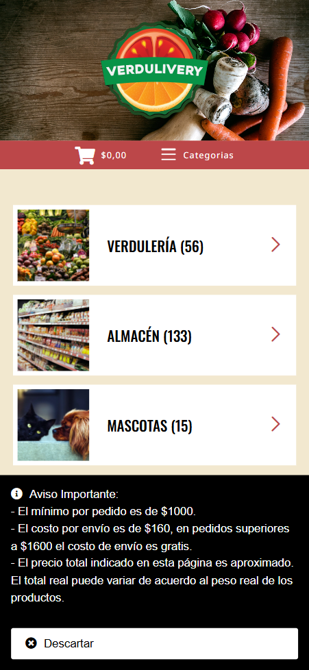
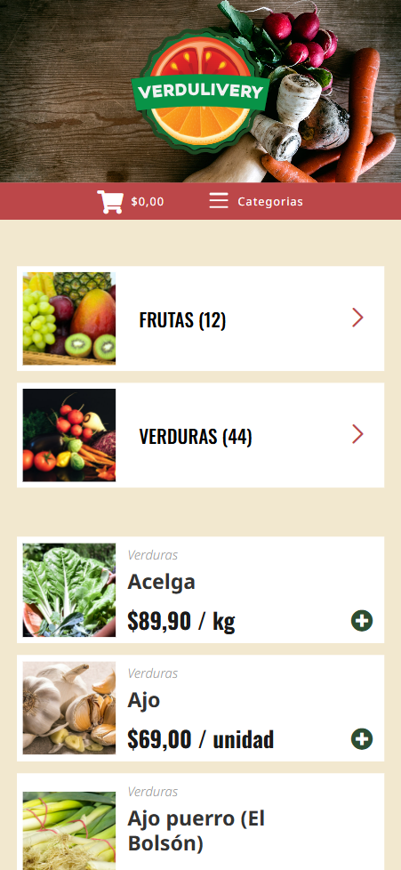
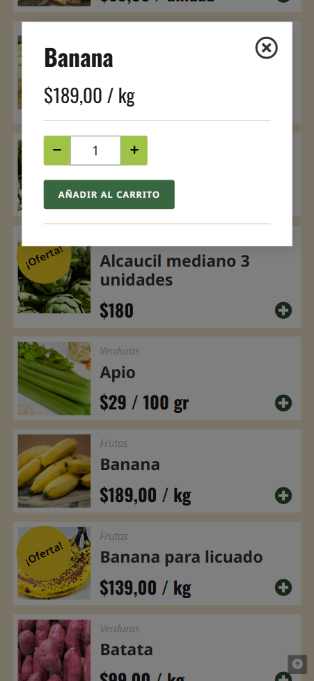
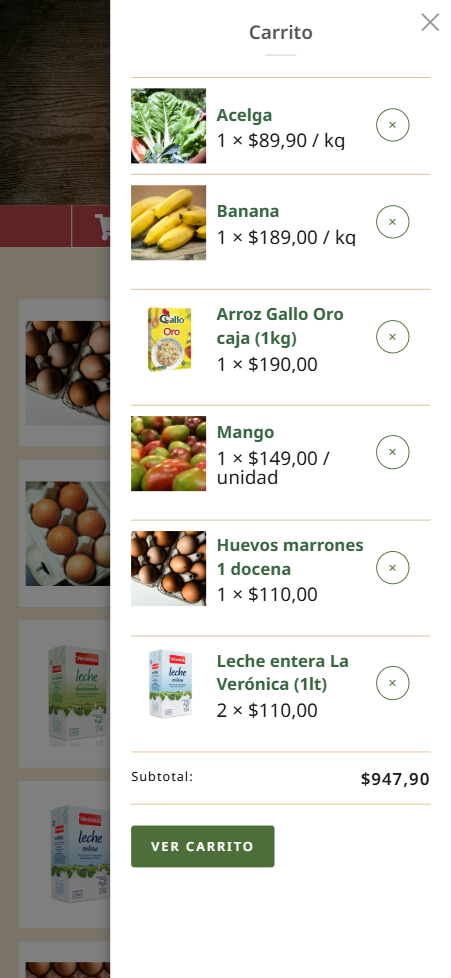
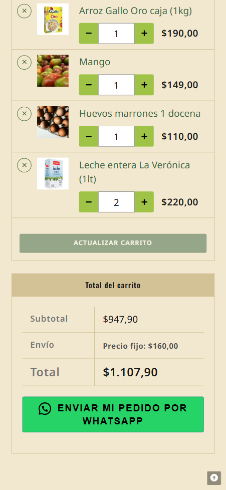
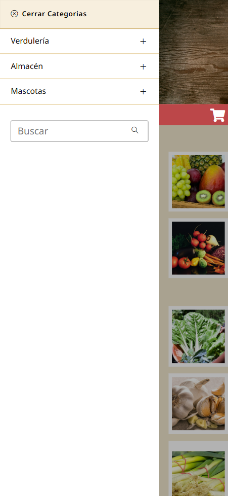
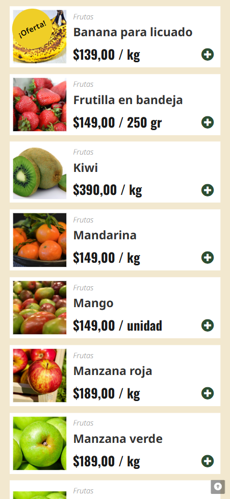
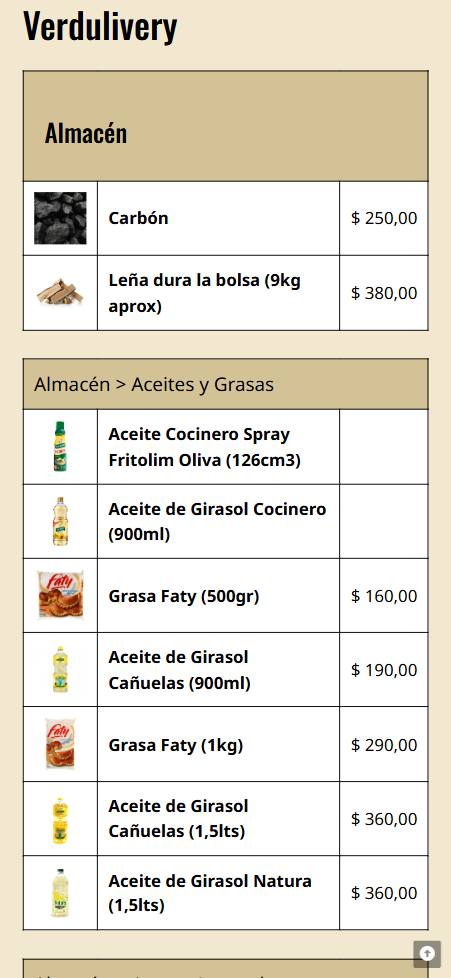
Pantallas para Escritorio
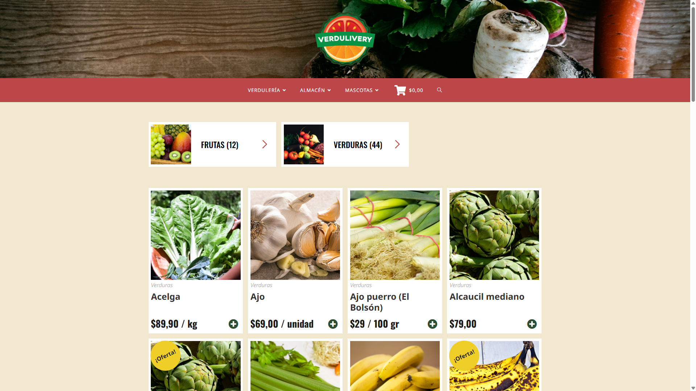
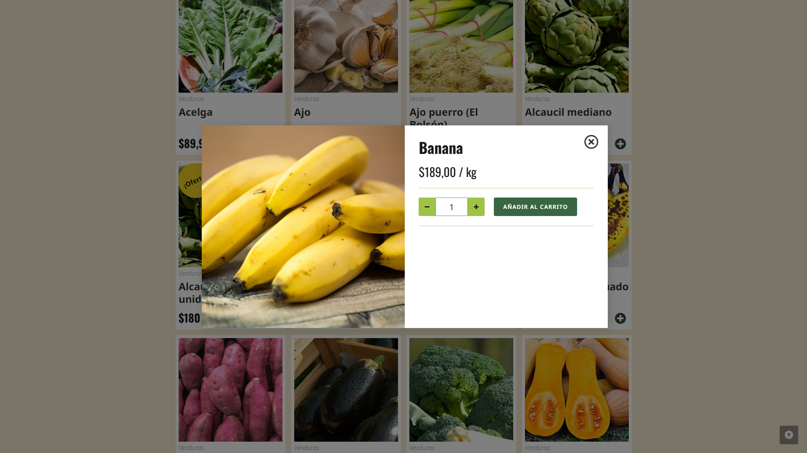
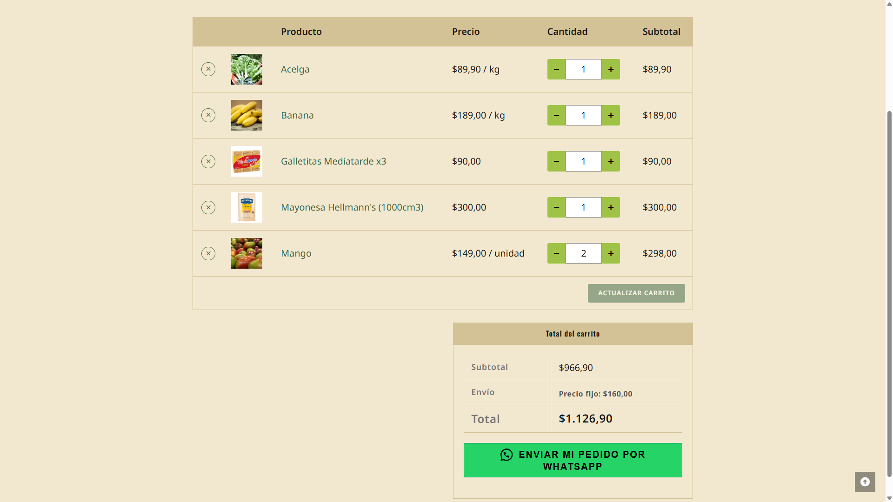
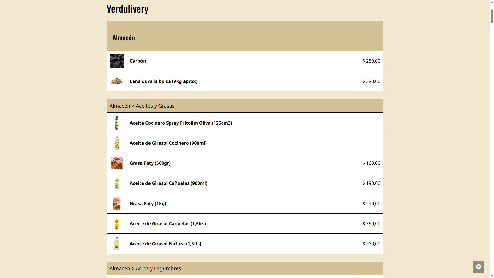
El desafío
El proyecto estuvo definido por varias restricciones estratégicas:
- Disposición Técnica:El negocio aún no estaba listo para gestionar o mantener una infraestructura de e-commerce a gran escala.
- Presupuesto Ajustado: La solución debía ser rentable y de alto impacto.
- Alfabetización Digital: La base de usuarios variaba desde personas con conocimientos tecnológicos hasta aquellas con una experiencia digital limitada, lo que exigía un alto estándar de accesibilidad.
- Gestión de Relaciones: Era vital mantener una comunicación directa e individualizada para solicitudes especiales y entregas.
La Solución
Diseñé un catálogo web mobile-first de alta accesibilidad que prioriza la claridad mediante una tipografía llamativa y una navegación intuitiva. Para cerrar la brecha entre la navegación digital y los pedidos manuales, implementé un sistema de pedidos híbrido:
- Integración con WhatsApp: En lugar de un proceso de pago complejo, el sitio genera un pedido con el formato adecuado que el usuario envía directamente al vendedor a través de WhatsApp. Esto mantuvo el contacto cercano que los clientes valoraban, al mismo tiempo que agilizó el proceso de selección.
- Diseño Inclusivo: Incluí una "Vista de Lista" simplificada específicamente para los clientes que preferían el formato original basado en texto, asegurando que ningún usuario quedara excluido.
- Eficiencia Operativa: Un panel de administración de WordPress simplificado permite realizar actualizaciones rápidas en tiempo real de los precios y el stock, asegurando que los clientes siempre tengan información precisa.
Este enfoque proporcionó una presencia digital profesional que mejoró el descubrimiento de productos sin sacrificar la conexión personal de la marca.